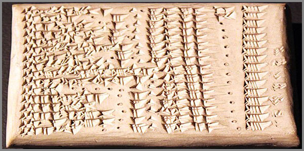

33. MUL.APIN Ժամանակակից Շումերական Վկայությունը
 |
Lռությունը երբեմն ավելի խոսուն է, քան հազարավոր տարեգրություններ։ Այդ լռությունը, որի մասին հիմա պիտի պատմեմ, պահված է եղել կավե սալիկների մեջ, որոնք հազարամյակներ շարունակ թաղված են եղել Միջագետքի ավազների տակ։ Դրանցից մեկի հավաքածուն կոչվում է MUL.APIN։ Այս անունը քաղդեական է, բայց նրա մեջ շնչում է Շումերի հոգին։
MUL.APIN-ը պարզապես աստղագիտական տեքստ չէ։ Այն մի վկայություն է՝ գրված կավի վրա, այն մասին, որ երկինքը ժամանակին կարդացվել է ոչ թե պատահական աչքով, այլ խորը համակարգով և այդ համակարգի անունն է 60-ական համակարգ։
Սա այն համակարգն է, որով Շումերները չափել են ժամանակը, բաժանել երկինքը, կառուցել օրացույցը և թողել մեզ մի ժառանգություն, որը մինչ օրս ապրում է մեր ժամացույցների, մեր շրջանագծերի և մեր օրացույցների մեջ։
Այս աշխատությունը փորձ է՝ վերծանելու MUL.APIN-ը ոչ թե որպես հնագիտական ցուցանմուշ, այլ որպես 60-ական աշխարհընկալման կենդանի վկայություն։
Մենք կտեսնենք, թե ինչպես է ծնվել առաջին երկնային քարտեզը՝ 18 համաստեղություններով։ Կհասկանանք, թե ինչու է 18-ը ոչ թե պատահական թիվ, այլ 60-ական համակարգի բնական արգասիք։ Կհետևենք, թե ինչպես է այդ համակարգը հետագայում ենթարկվել առաջին մեծ դեգրադացիային՝ 18-ից իջնելով 12-ի։ Եվ կտեսնենք, թե ինչպես է այդ 12-ը հասել մեզ՝ որպես կենդանակերպի 12 նշաններ։
Սա պատմություն է այն մասին, թե ինչպես է երկինքը դարձել թիվ, թիվը՝ համակարգ, համակարգը՝ ժառանգություն, իսկ ժառանգությունը՝ բանալի։
Եվ այդ բանալին դեռ խոսում է բացելով դռներ։
Պարզապես պետք է լսել։
MUL.APIN Բաբելոնյան սալիկների Շումերական ժառանգությունը
Երբ մենք ասում ենք «MUL.APIN», մենք սովորաբար պատկերացնում ենք բաբելոնյան աստղագիտության մի հնագույն տեքստ՝ գրված կավե սալիկների վրա, որը մեզ է հասել հազարամյակների խորքից։ Բայց այս տեքստը իրականում շատ ավելին է, քան աստղագիտական փաստաթուղթ։ Այն մի կամուրջ է, որով շումերական միտքը հասել է բաբելոնյան աշխարհ և այնտեղից՝ մինչև մեր օրերը։
Ավանդական գիտությունը MUL.APIN անունը թարգմանում է պարզորեն՝ MUL՝ «աստղ», իսկ APIN՝ «գութան»։ Եվ այս թարգմանությունը, առաջին հայացքից, կարծես թե բացատրում է ամեն ինչ։ Բացատրում է այն, որ աստղերի և համաստեղությունների երկնային քարտեզը նվիրված է երկրագործական կամ գյուղատնտեսական աշխատանքների կարգի կազմակերպմանը, որի խորհրդանիշը գութանն է:
Բայց հենց այստեղ պիտի կանգ առնել։ Պիտի կանգ առնել, որովհետև այս բացատրությունը չափազանց հարմար է, որ ճշմարիտ լինի։
Մի տեքստ, որը նկարագրում է աստղերի շարժումը, համաստեղությունների դիրքը, լուսնի ու արեգակի ընթացքը, չէր կարող իր վերնագրում կրել հողագործական ենթատեքստ։ Աստղագիտական աշխատանքը չի շփոթվում հողագործական աշխատանքի կատարման կարգի հետ։ Երկինքը չի չափվում գութանով, և գութանը չի կարդում աստղերի ճանապարհը։
Սա նշանակում է, որ մենք իրավունք ունենք կասկածելու։ Ոչ թե մերժելու, այլ կասկածելու։ Կասկածը գիտության սկիզբն է։ Դա դուռ է, որը տանում է դեպի այն, ինչը թաքնված է մակերեսի տակ։ Իսկ երբ մենք սկսում ենք կասկածել, մենք սկսում ենք լսել և լսելիս MUL.APIN-ի հնչյունները մեզ պատմում են մի այլ պատմություն։
Այստեղ պիտի հստակ մեջբերել այն իմաստները, որոնց մասին հիմա խոսվելու է, և որոնք ստացվում են «Լեզվամտածող Աշխարհը» տեսլականի համաձայն։ Դրանք չեն բխում ավանդական ստուգաբանությունից, այլ ծնվում են հնչյունների խորքից՝ այն մեթոդով, որը դարձել է մեր վերծանման գործիքը։
Եվ այդ մեթոդով՝ MUL-ը՝ «մուլ», բացվում է որպես մի հնչյուն, որի մեջ թաքնված է աստղի նյութականացումը, զորության կուտակումը և տեսանելի լույսի ծնունդը։ Այն չի նշանակում պարզապես «աստղ» որպես հեռավոր կետ։ Դա նշանակում է այն, ինչը զորությամբ նյութականանում է և լույս է դառնում։ Իսկ APIN-ը՝ «ապին», մի հնչյուն է, որի մեջ թաքնված են արարման սկիզբը, զորության պահոցը, իմաստը և ներքին էությունը։ Դա չի նշանակում պարզապես «գութան»։ Դա նշանակում է այն, ինչը արարման սկզբից գալիս է, զորություն է կուտակում, իմաստ է դառնում և հանգրվանում է ներքին էության մեջ։
Այսինքն՝ հնչյունների խորքում MUL.APIN-ը չի խոսում հողի, կամ հողագործության մասին։ MUL.APIN-ը խոսում է այն մասին, թե ինչպես են երկնային մարմինները դառնում տեսանելի, իսկ տեսանելին՝ իմաստավորվում։ Եվ եթե փորձենք արտահայտել այն, ինչ ասում է հնչյունը, ապա MUL.APIN-ը դառնում է ոչ թե «Աստղ-Գութան», այլ՝ «Աստղային արարման զորության իմաստի ներքին էություն»։ Սա արդեն ոչ թե գութանի, այլ երկնային, կամ տիեզերական կարգի պատկեր է։ Եվ այստեղ է, որ մենք առաջին անգամ դիպչում ենք այն բանին, ինչը հետագայում դառնալու է մեր ողջ ճանապարհի առանցքը՝ 60-ական համակարգի մեջ թաքնված այն կարգին, որով Շումերները չափել են ոչ միայն հողը, երկինքը, այլև ժամանակի և գոյության ամբողջականությունը, որի վկաներից մեկը MUL.APIN-ն է:
Այս կավե սալիկները պարունակում են աստղերի ցուցակներ, համաստեղությունների նկարագրություններ, լուսնի և արեգակի ընթացքի հաշվարկներ, սեզոնների փոփոխության նշաններ։ Դրանք գրված են այնպիսի ճշգրտությամբ, որ ժամանակակից աստղագետները մինչ օրս զարմանում են՝ ինչպե՞ս կարող էր հին մարդը, առանց աստղադիտակի, առանց ժամանակակից սարքերի, այսքան ճշգրիտ նկարագրել երկինքը։
Պատասխանը թաքնված է հենց 60-ական համակարգի մեջ։ Երբ դու աշխարհը չափում ես ոչ թե տասնական, այլ 60-ական համակարգով, երկինքը դառնում է այլ կերպ ընթեռնելի։ Շրջանը բաժանվում է 360 աստիճանի, ժամանակը՝ 60 րոպեի, ամեն ինչ դառնում է համաչափ, բնական, ինքնաբերաբար հասկանալի։ Այս համակարգի մեջ աստղերը չեն փախչում հաշվարկից, այլ ընդհակառակը՝ դասավորվում են մի կարգի մեջ, որը մարդը կարողանում է վերծանել։
Եվ ահա, MUL.APIN-ը հենց այդ կարգի արձանագրությունն է։
Բայց սա միայն սկիզբն է, որովհետև MUL.APIN-ի մեջ թաքնված է մի շատ ավելի խորը գաղտնիք՝ 18 համաստեղությունների գաղտնիքը, որը հետագայում կդառնա 12 և այդ 12-ը կհասնի մինչև մեր օրերը՝ որպես կենդանակերպի նշաններ։
Իսկ թե ինչպես է դա տեղի ունեցել, և ինչ է դա նշանակում մեզ համար այսօր, մենք կտեսնենք հաջորդ գլուխներում։
MUL.APIN կավե սալիկների 60-ական շնչառությունը
Երբ հնագույն դիտորդը գիշերով նայում էր երկնքին, նա չէր տեսնում միայն աստղերի քաոսային ցրում։ Նա տեսնում էր մի կարգ, որը սպասում էր, որ իրեն կարդան։
Այդ կարգը չէր ծնվել մեկ գիշերվա մեջ։ Այն կուտակվել էր սերունդների ընթացքում՝ դիտումներով, հաշվարկներով, կրկնություններով, և ի վերջո դրոշմվել կավե սալիկների վրա՝ որպես MUL.APIN։
MUL.APIN-ը սովորական աստղացուցակ չէ։ Այն մի ամբողջ երկնքի քարտեզ է, որտեղ ամեն աստղ, ամեն համաստեղություն, ամեն ուղի իր տեղն ունի, և այդ քարտեզը շնչում է 60-ական համակարգով։
Այստեղ երկինքը բաժանված է երեք մեծ գոտիների, որոնց անունները հնչում են որպես տիեզերական երրորդության երեք դեմքեր.
Էնլիլի ուղի՝ հյուսիսային երկնքի գոտին
Անուի ուղի՝ միջին, հասարակածային գոտին
Էայի ուղի՝ հարավային երկնքի գոտին
Բայց այս անունները պատահական չեն։ Դրանք գալիս են շումերական պանթեոնի երեք գերագույն աստվածներից, որոնցից յուրաքանչյուրը տիրում էր տիեզերքի իր հատվածին։
Էնլիլը՝ քամու, օդի և երկրային կարգի աստվածն էր։ Նա այն ուժն էր, որը կապում էր երկինքը երկրի հետ, և հենց նրա անունով է կոչվել հյուսիսային ուղին, որով ընթանում էին երկնքի այն հատվածները, որոնք առավել կապված էին եղանակի, քամիների և երկրային կյանքի ռիթմի հետ։
Անուն՝ երկնքի գերագույն աստվածն էր, աստվածների հայրը։ Նա այն անշարժ առանցքն էր, որի շուրջ պտտվում էր ամբողջ տիեզերքը։ Եվ հենց նրա անունով է կոչվել միջին ուղին՝ այն գոտին, որտեղով անցնում են Արևը, Լուսինը և մոլորակները, և որտեղից կարդացվում է ժամանակի ու կարգի հիմնական ընթացքը։
Էան՝ իմաստության, ջրերի և անդրաշխարհի աստվածն էր։ Նա տիրում էր այն ամենին, ինչ խորքում է՝ ծովերում, երկրի տակ, թաքնված վայրերում։ Եվ հենց նրա անունով է կոչվել հարավային ուղին, որը նայում էր դեպի ստորին երկինք, դեպի այնտեղ, ուր աստղերը կարծես իջնում են դեպի անհայտը։
Այսպիսով, երեք ուղիները միայն աստղագիտական գոտիներ չէին։ Դրանք տիեզերական երեք սկզբունքների արտացոլանքն էին՝ վերևը Անուն, ներքևը՝ Էան, և դրանց միջև շնչող, կապող ուժը՝ Էնլիլը։
Այս երեք ուղիների միջով էին անցնում MUL.APIN-ի 18 համաստեղությունները։ Բայց այս 18-ը հավասարապես չէին բաշխվում։ Դրանց մեծ մասը՝ տասներկուսը, գտնվում էին Անուի ուղու վրա, որովհետև հենց այդ միջին գոտին էր, որ ամենամոտն էր այն ճանապարհին, որով շարժվում են Արևը, Լուսինը և մոլորակները։ Հինգ համաստեղություններ պատկանում էին Էնլիլի ուղուն՝ հյուսիսային երկնքին և միայն մեկը Էայի ուղուն՝ հարավային երկնքին։
Այստեղ պետք է մի պահ կանգ առնել, որովհետև կարող է տպավորություն ստեղծվել, թե հարավային երկինքը աղքատ է եղել կամ անտեսված է եղել հնագույն դիտորդի կողմից։ Բայց դա այդպես չէ։
Էայի ուղին հարուստ է եղել բազմաթիվ աստղերով ու համաստեղություններով, որոնք պարզապես չեն մտել այս կոնկրետ ցանկի մեջ։ Այս 18-ը եղել են ոչ թե ամբողջ երկնքի, այլ հատկապես այն գոտու աստղերը, որոնք առավել կարևոր էին ժամանակի հաշվարկի, օրացույցի և աստղագիտական դիտարկումների համար։
Այս փաստը շատ խոսուն է, որովհետև հենց այս 18-ի կազմության մեջ է թաքնված այն առաջին նշույլը, որից հետագայում ծնվելու է կենդանակերպի 12 նշանների համակարգը։
Բայց մինչ այդ՝ նայենք այս 18-ի անուններին, որոնցից յուրաքանչյուրը մի ամբողջ պատմություն է։
Շումերական անուն/Աքքադական անուն |
Նշանակությունը |
Ուղին |
Ժամանակակից անուն |
MUL.UDU.NITA |
Վարձու մշակ |
Անուի ուղի |
Խոյ |
MUL.MUL |
Աստղերի փունջ |
Անուի ուղի |
Պլեադեսներ |
MUL.MAŠ.TAB.BA.GAL.GAL |
Մեծ երկվորյակներ |
Անուի ուղի |
Երկվորյակներ |
MUL.ALLA |
Խեցգետին |
Անուի ուղի |
Խեցգետին |
MUL.UR.GU.LA |
Առյուծ |
Անուի ուղի |
Առյուծ |
| MUL.AB.SIN | Գարու ցողուն |
Անուի ուղի |
Կույս |
| MUL.ZIBANITU | Կշեռք |
Անուի ուղի |
Կշեռք |
| MUL.GIR.TAB | Կարիճ |
Անուի ուղի |
Կարիճ |
| MUL.PA.BIL.SAG | Պաբիլսագ |
Անուի ուղի |
Աղեղնավոր |
| MUL.SUHUR.MAŠ | Այծ-ձուկ |
Անուի ուղի |
Այծեղջյուր |
| MUL.GU.LA | Հսկա |
Անուի ուղի |
Ջրհոս |
| MUL.KUN.MEŠ | Պոչեր |
Անուի ուղի |
Ձկներ |
| MUL.GAM | Կեռա |
Էնլիլի ուղի |
Կապելլա |
| MUL.SIPA.ZI.AN.NA | Երկնքի հավատարիմ հովիվ |
Էնլիլի ուղի |
Օրիոն |
| MUL.DILI | Մենակյաց |
Էնլիլի ուղի |
Ալդեբարան |
| MUL.KAK.SI.SA | Նետ |
Էայի ուղի |
Սիրիուս |
| MUL.LUGAL | Թագավոր |
Էնլիլի ուղի |
Ռեգուլուս |
MUL.APIN |
Արոր |
Էնլիլի ուղի |
Արոր |
Այս անունները պատահական չեն ծնվել։
Դրանց մի մասը գալիս է աստղերի ձևից։ Հին դիտորդը նայել է երկնքին, և աստղերի դասավորության մեջ տեսել է առյուծի, կարիճի, խեցգետնի, երկվորյակների ուրվագծերը։
Դրանց մի ուրիշ մասը ծնվել է հողի հետ կապից։ Որովհետև հնագույն դիտորդը միաժամանակ և՛ աստղագետ էր, և՛ հողագործ։ Նա տեսնում էր, որ որոշ աստղերի հայտնվելը համընկնում է ցանքի, հունձքի կամ հողի մշակման ժամանակի հետ։ Այդպես ծնվեցին «Գարու ցողունը», «Վարձու մշակը», «Արորը»։
Եվ հենց այս երկրորդ խմբի պատճառով է, որ հետագայում MUL.APIN-ը ներկայացվեց որպես գյուղատնտեսական տեքստ, իսկ «APIN»-ը թարգմանվեց որպես «գութան» կամ «արոր»։
Բայց մենք արդեն տեսանք, որ «APIN»-ի հնչյունային վերծանումը բացում է բոլորովին այլ իմաստ՝ «Արարման զորության իմաստի ներքին էություն»։ Այստեղ է, որ MUL.APIN-ը դադարում է լինել հողի օրացույց և դառնում է այն, ինչ իրականում եղել է՝ երկնքի կարգի 60-ական արձանագրություն, որովհետև 18-ը պատահական թիվ չէ։
18-ը 3 × 6 է։ Երեքը ուղիներն են՝ Էնլիլ, Անու, Էա։ Վեցը՝ 60-ի մեկ տասներորդը, այն թիվը, որը կրկնվելու է MUL.APIN-ի ողջ կառուցվածքում։
Այսինքն՝ հնագույն աստղագետը, անգամ եթե գործածում էր հողի լեզուն, երկինքը կազմակերպել էր 60-ական տրամաբանությամբ։ Եվ դա է պատճառը, որ MUL.APIN-ի կավե սալիկները մինչ օրս շնչում են։
Նրանց կավը՝ մարմինն է, իսկ սալիկին դրոշմված կարգը՝ նրա 60-ական հոգին է։ Եվ այս միաձուլումն է, որ մենք պիտի պահենք մեր աչքի առաջ, երբ առաջ շարժվենք դեպի այն հարցը, թե ինչպես է այս 18-ը հետագայում դարձել 12, և ինչ է կորել այդ ճանապարհին։
Առաջին երկնային քարտեզի ծնունդը MUL.APIN -ի 18 համաստեղություններով
Մինչ MUL.APIN-ը, երկինքը մարդու համար եղել է մեծ, անանուն և անսահման մի տարածություն, որտեղ աստղերը վառվում էին առանց կարգի, առանց անվան, առանց պատմության, բայց ինչ-որ պահի, հին դիտորդը կանգ առավ և սկսեց ոչ թե պարզապես նայել, այլ տեսնել։ Եվ այդ տեսնելը փոխեց ամեն ինչ։
Նա նկատեց, որ աստղերը պատահական չեն ցրված, որ նրանք կրկնվում են, շարժվում են, հայտնվում և անհետանում են որոշակի ժամանակներում, և որ նրանց միջև կարելի է գծեր անցկացնել՝ պատկերներ, ճանապարհներ, սահմաններ։ Այդ պահին ծնվեց երկնային քարտեզի գաղափարը։
MUL.APIN-ը այդ գաղափարի առաջին մեծ արգասիքն է։ Այն չի նկարագրում երկինքը որպես անծայրածիր խավար, այլ որպես մի տարածք, որը կարելի է բաժանել, անվանել, կարգավորել և կարդալ։ Եվ այդ քարտեզի հիմքում դրվեցին 18 համաստեղություններ։
Սրանք այն աստղային խմբերն էին, որոնք առավել կարևոր էին դիտորդի համար, որովհետև նրանցով էր անցնում երկնքի գլխավոր ճանապարհը՝ այն գոտին, որով շարժվում են Արևը, Լուսինը և մոլորակները։ Բայց ամենակարևորն այն է, որ այս 18-ը դասավորված էին երեք ուղիներով, և այդ ուղիները միասին կազմում էին ոչ միայն տարածական, այլև ժամանակային կառույց։
Էնլիլի ուղին հյուսիսում էր։ Այնտեղ աստղերը կարծես ավելի հաստատուն էին, ավելի դանդաղ, ավելի հավերժական։ Դրանք այն աստղերն էին, որոնք միշտ վերադառնում էին նույն տեղը, ինչպես հին աստվածները, որոնց անունով կոչվել էր այդ ուղին։
Անուի ուղին մեջտեղում էր։ Այն ամենակենդանի գոտին էր, որտեղ ամեն ինչ շարժվում էր, փոխվում, անցնում։ Այստեղ էին Արևը, Լուսինը, մոլորակները, և այստեղ էին կենդանակերպի ապագա 12 նշանների սաղմերը։
Էայի ուղին հարավում էր։ Այն նայում էր դեպի խորքը, դեպի այնտեղ, ուր աստղերը կարծես իջնում էին երկրի տակ, դեպի անհայտը, դեպի այն աշխարհը, որը թաքնված է տեսանելիից այն կողմ։
Եվ այսպես, 18 համաստեղությունները, բաշխված այս երեք ուղիներով, կազմեցին մի ամբողջական պատկեր, որի մեջ վերևը կապվում էր ներքևի հետ, հյուսիսը՝ հարավի, տեսանելին՝ անտեսանելիի, և տարածությունը՝ ժամանակի։
Սա հենց այն պահն է, երբ երկինքը դադարեց լինել պարզապես տարածություն և դարձավ քարտեզ, որովհետև հին դիտորդը հասկացավ, որ աստղերը ոչ միայն տեղ ունեն, այլև ժամանակ ունեն։ Դրանք հայտնվում են որոշակի եղանակներին, բարձրանում են որոշակի ամիսներին, անհետանում են որոշակի օրերին։ Եվ եթե հետևես նրանց ընթացքին, կարող ես իմանալ՝ երբ է ցանքի ժամանակը, երբ է հունձքը, երբ է հեղեղը, երբ է երաշտը, երբ է լույսի աճը և երբ՝ խավարի տիրապետությունը։
Այսպես ծնվեց օրացույցի նախատիպը։ Եվ այսպես ծնվեց այն մեծ համակարգը, որի մեջ թիվը, աստղը, եղանակը և մարդու աշխատանքը միավորվեցին մեկ ամբողջության մեջ։
Բայց այստեղ պետք է մի շատ կարևոր բան ընդգծել։ Այս քարտեզը չէր ստեղծվել միայն գործնական նպատակով։ Դրա մեջ կար նաև սրբազան մի շերտ, որովհետև հին մարդը չէր բաժանում երկինքը միայն հողի աշխատանքների համար։ Նա դա անում էր նաև այն պատճառով, որ հավատում էր, թե երկինքը աստվածների բնակավայրն է, և այնտեղ գրված է մարդու ճակատագիրը և այդ գիրը պետք է կարդացվեր։
Ահա թե ինչու MUL.APIN-ը միայն աստղացուցակ չէ։ Այն առաջին փորձն է՝ երկինքը դարձնելու գիրք, որտեղ ամեն աստղ մի տառ է, ամեն համաստեղություն՝ մի բառ, իսկ երեք ուղիները՝ այն նախադասությունները, որոնցով տիեզերքը պատմում է իր մասին։ Եվ այս գրքի առաջին էջերում դրոշմված են հենց այդ 18 անունները, որոնցից յուրաքանչյուրը մի դուռ է դեպի մի ավելի խորը իմաստ։
Սա է առաջին երկնային քարտեզի ծնունդը՝ ոչ թե սառը գծապատկեր, այլ կենդանի մի համակարգ, որի մեջ տարածությունը դարձել է ժամանակ, ժամանակը՝ թիվ, իսկ թիվը՝ ճանապարհ, և այդ ճանապարհը տանում է դեպի 60-ական համակարգի ամենախոր գաղտնիքները:
18 –ի մաթեմատիկան 60-ական համակարգում
Երբ մենք ասում ենք «18», մենք սովորաբար տեսնում ենք մի սովորական թիվ, բայց MUL.APIN-ի աշխարհում ոչինչ սովորական չէ։ Այնտեղ 18-ը միայն քանակ չէ։ Այն կարգ է, համամասնություն է, շունչ է և այդ շունչը գալիս է 60-ական համակարգից։
Որպեսզի հասկանանք դա, պետք է մի պահ հիշենք, թե ինչ է 60-ական համակարգը իր էությամբ։ 60-ը այն թիվն է, որը կարելի է բաժանել ամենաշատ ձևերով՝ առանց կոտորակների, առանց մնացորդների, առանց խզումների։ Նրա բաժանարարներն են՝ 1, 2, 3, 4, 5, 6, 10, 12, 15, 20, 30 և 60։
Այսինքն՝ 60-ի մեջ թաքնված են այն բոլոր հիմնական համամասնությունները, որոնցով կարելի է կարգավորել և՛ տարածությունը, և՛ ժամանակը։
Եվ ահա, այս բաժանարարների մեջ առանձնահատուկ տեղ ունեն երեքն ու վեցը։
Երեքը՝ որովհետև այն առաջին կենտ թիվն է, որը բացում է բազմակիության և կարգի գաղափարը՝ ի տարբերություն մեկի, որը դեռ ամբողջական է և չբաժանված։Վեցը՝ որովհետև այն 60-ի մեկ տասներորդն է, և միևնույն ժամանակ 3-ի կրկնապատիկը։ Եվ ահա, երբ այս երկուսը միավորվում են, ծնվում է 18-ը՝ 3 × 6 = 18
Սա պարզ հավասարում է, բայց MUL.APIN-ի համատեքստում այն դառնում է ճակատագրական, որովհետև 3-ը ուղիների թիվն է՝ Էնլիլ, Անու, Էա։ Իսկ 6-ը՝ այն ներքին ռիթմը, որը կրկնվում է ամենուր և այդ երկուսի միավորումից ծնվում է 18 համաստեղությունների այն կարգը, որի միջոցով հին դիտորդը կարդում էր երկինքը։
Բայց սա դեռ ամենը չէ։ Եթե նայենք ավելի խորը, կտեսնենք, որ 18-ը կապված է նաև 60-ի հետ մի այլ, ավելի նուրբ ձևով։
60-ը բաժանելով 18-ի վրա, ստանում ենք՝ 60 ÷ 18 = 3.333…
Այս թիվը նույնպես պատահական չէ, որովհետև 3.333…-ը ոչ այլ ինչ է, քան 60-ի և 18-ի հարաբերության մեջ թաքնված նույն եռյակի անվերջ կրկնությունը։ Այսինքն՝ 18-ը 60-ի հետ կապված է ոչ թե մեխանիկորեն, այլ կենդանի, պուլսացող մի հարաբերությամբ, որի մեջ երևում է երեքի անվերջ շունչը։
Սա շատ կարևոր է, որովհետև երեքը հենց այն թիվն է, որով երկինքը բաժանվել է ուղիների։ Երեք ուղի, և այդ ուղիներից յուրաքանչյուրը՝ իր աստղերով։ Եվ այդ երեքի մեջ է թաքնված ամբողջ 60-ական համակարգի կմախքը։
Բայց կա մի էլ ավելի խորքային կապ։ Եթե վերցնենք 18-ը և բազմապատկենք 2-ով, կստանանք 36։ 36-ը նույնպես 60-ական համակարգի կարևոր թիվ է, որովհետև 36 × 10 = 360։ 360-ը շրջանի աստիճաններն են, որոնցով մինչ օրս չափում ենք երկինքը։ Սա նշանակում է, որ 18-ը, իր կրկնապատկման միջոցով, ուղիղ կապված է այն 360 աստիճանի հետ, որով հնագույն աստղագետը չափել է ամբողջ երկնակամարը։
Այսինքն.
3 × 6 = 18
18 × 2 = 36
36 × 10 = 360
Եվ այս շղթայի սկզբում կանգնած է հենց 18-ը։ Ահա թե ինչու MUL.APIN-ի 18 համաստեղությունները պատահական ընտրություն չեն։
Դրանք այն առաջին աստղային խմբերն են, որոնցով հին դիտորդը սկսել է կառուցել ամբողջ երկնքի 60-ական քարտեզը և այդ քարտեզը, որքան էլ հետագայում փոխվի, պարզեցվի կամ աղավաղվի, իր հիմքում միշտ կրելու է այս 18-ի կարգը։
Սա է 18-ի մաթեմատիկան 60-ական համակարգում՝ ոչ թե սառը հաշվարկ, այլ մի կենդանի համամասնություն, որի մեջ թիվը դառնում է ճանապարհ, ճանապարհը՝ կարգ, իսկ կարգը՝ երկինք։
18-ից 12. Առաջին դեգրադացիան
Երբ 18 համաստեղությունները կազմեցին առաջին երկնային քարտեզը, դրանց մեջ կար մի նուրբ հավասարակշռություն։ Երեք ուղի կար՝ Էնլիլի, Անուի, Էայի։ Եվ այդ երեքի միջով անցնում էին 18 աստղային խմբեր՝ բաշխված այնպես, որ ամբողջ երկինքը դառնար մեկ շնչող համակարգ։
Բայց այս հավասարակշռությունը երկար չտևեց։ Ժամանակի ընթացքում ինչ-որ բան սկսեց փոխվել ոչ թե երկնքում, այլ մարդու ընկալման մեջ։
Հին դիտորդները, որոնք սերունդներ շարունակ պահպանել էին MUL.APIN-ի գիտելիքը, աստիճանաբար սկսեցին կրճատել այն, ինչը նախկինում համարում էին ամբողջական և այդ կրճատման արդյունքում ծնվեց մի նոր թիվ՝ 12-ը։ 12-ը, իհարկե, պատահական չէր։ Այն 60-ի մեկ հինգերորդն է, և այն նույնպես ունի իր ներդաշնակությունը, բայց 12-ը արդեն 18 չէր։
18-ի մեջ կար երեք ուղիների ամբողջականությունը։ Կար հյուսիսը, միջինը և հարավը։ Կար վերևը, կենտրոնը և ներքևը։ 12-ի մեջ մնաց միայն միջին ուղին՝ Անուի ուղին, այն գոտին, որով անցնում են Արևը, Լուսինը և մոլորակները։ Հինգ համաստեղություններ, որոնք պատկանում էին Էնլիլի ուղուն, դուրս մնացին համակարգից։ Դուրս մնաց նաև այն մեկը, որ պատկանում էր Էայի ուղուն, հետագայում կորելով կենդանակերպի կազմից։
Այսպիսով, ամբողջ երկնքի քարտեզը նեղացավ մինչև մի գոտի, որը, որքան էլ կարևոր լիներ, այլևս ամբողջական երկինքը չէր ներկայացնում։
Սա առաջին դեգրադացիան էր։ Այն տեղի ունեցավ ոչ թե մեկ օրում, այլ դարերի ընթացքում՝ կամաց, աննկատ, գրեթե անգիտակցաբար։ Մարդիկ սկսեցին մոռանալ, որ ժամանակին երկինքը երեք ուղի ուներ։ Նրանց համար բավական դարձավ մեկը՝ այն, որով ընթանում էին լուսատուները և այդ մեկ ուղու վրա գտնվող 12 համաստեղությունները դարձան այն, ինչ մենք այսօր անվանում ենք կենդանակերպ։
Բայց այստեղ պետք է մի շատ կարևոր բան հասկանալ։ Այս անցումը չէր նշանակում, որ հին համակարգը սխալ էր։ Ընդհակառակը, այն չափազանց ճշգրիտ էր։ Սխալը տեղի ունեցավ ոչ թե երկնքում, այլ մարդու մեջ։ Մարդը, ձգտելով պարզության, զոհեց ամբողջականությունը։ Նա վերցրեց 60-ական համակարգի միայն այն մասը, որն իրեն ավելի հարմար էր, և մոռացավ մնացածը։ Այսպես ծնվեց առաջին դեգրադացիան: 18-ը դարձավ 12, պահպանելով ուղիներից մեկը՝ ամբողջական երկնքից միայն էկլիպտիկայի գոտին։
Սա այն պահն էր, երբ մարդկությունը կատարեց իր առաջին մեծ զիջումը՝ հանուն պարզության, հանուն հարմարության, հանուն այն բանի, ինչը հետագայում կոչվելու էր «գործնական մոտեցում»։
Բայց ամեն ինչ չի, որ կորավ, որովհետև նույնիսկ 12-ի մեջ պահպանվեց այն ներքին կարգը, որը գալիս էր 60-ական համակարգից։ 12-ը մինչ օրս բաժանվում է 3-ի, 4-ի, 6-ի, 2-ի և այդ բաժանումների մեջ դեռ շնչում է 60-ի հիշողությունը։
Բայց հիշողությունը բավարար չէ, որովհետև երբ մոռանում ես աղբյուրը, դու սկսում ես կորցնել նաև այն, ինչը գալիս է դրանից։ Եվ ահա, հենց այստեղից է սկսվում այն երկար ճանապարհը, որի ընթացքում մարդկությունը աստիճանաբար հեռացել է 60-ական ամբողջականությունից՝ իջնելով 10-ի, ապա՝ 2-ի։ Բայց դա արդեն ուրիշ պատմություն է։
Այստեղ մեզ համար կարևորը հետևյալն է՝ 18-ից 12 անցումը եղել է 60-ական համակարգի առաջին մեծ կորուստը, և այդ կորստի հետքը մինչ օրս տեսանելի է մեր երկնքում, մեր օրացույցում և մեր մտածողության մեջ։ Այս կորստի մասին է վկայում այն փաստը, որ մենք այսօր կենդանակերպի մեջ տեսնում ենք ընդամենը 12 նշան, մինչդեռ երկինքը ժամանակին ունեցել է 18 առանցքային համաստեղություններ՝ բաշխված երեք ուղիներով։
Սա առաջին դեգրադացիան էր, բայց ոչ վերջինը։
MUL.APIN –ից արձագանքված կենդանակերպը
Երբ 18-ից մնաց 12-ը, երկինքը չդատարկվեց։ Այն պարզապես նեղացավ, կենտրոնացավ, դարձավ ավելի պարզ, բայց նաև ավելի միակողմանի և այդ նեղացած երկնքի մեջ ծնվեց մի նոր համակարգ, որը հետագայում կոչվելու էր կենդանակերպ։
Կենդանակերպը MUL.APIN-ի անմիջական ժառանգն էր։ Նրա 12 նշանները հենց այն 12 համաստեղություններն էին, որոնք ժամանակին գտնվում էին Անուի ուղու վրա, և որոնց միջով անցնում էին Արևը, Լուսինը և մոլորակները։ Կենդանակերպը չստեղծեց նոր երկինք։ Այն վերցրեց հին երկնքի միայն միջին գոտին և այն դարձրեց ամբողջական համակարգ։
Այստեղ է թաքնված մի շատ կարևոր նրբություն։ Կենդանակերպը, որքան էլ գեղեցիկ ու կարգավորված է, իր էությամբ մի կրճատված տիեզերք է։ Այն 60-ական ամբողջականության միայն մի մասն է կրում իր մեջ, բայց միևնույն ժամանակ, այդ մի մասը անաղարտ չի մնացել։ Այն պահպանել է 60-ի որոշ հիմնական համամասնություններ, որոնք 60-ական կարգի հիշողությունն են և այդ հիշողությունն է, որ կենդանակերպին տալիս է իր ներքին ուժը։
Բայց կա մի բան, որ կենդանակերպը կորցրել է ընդմիշտ։ Այն կորցրել է ուղիների եռամիասնությունը։ Այն կորցրել է հյուսիսի և հարավի ներկայությունը։ Այն կորցրել է այն խորքը, որը կար Էնլիլի և Էայի ուղիների մեջ և այդ կորուստը դարձել է կենդանակերպի ամենախոր վերքը, որը մինչ օրս զգացվում է, նույնիսկ եթե մենք չգիտենք դրա մասին։
Երբ մենք այսօր նայում ենք կենդանակերպի 12 նշաններին, մենք տեսնում ենք ոչ թե ամբողջ երկինքը, այլ միայն նրա միջին գոտին։ Մենք տեսնում ենք Խոյը, Ցուլը, Երկվորյակներին, Խեցգետինը, Առյուծը, Կույսը, Կշեռքը, Կարիճը, Աղեղնավորը, Այծեղջյուրը, Ջրհոսը և Ձկներին, բայց մենք չենք տեսնում այն համաստեղությունները, որոնք ժամանակին լրացնում էին այս պատկերը.
«Կեռան», որը հետագայում դարձավ Կապելլա
«Երկնքի հավատարիմ հովիվը», որի մեջ թաքնված է Օրիոնը
«Մենակյացը», որի մեջ ճանաչում ենք Ալդեբարանը
«Նետը», որի մեջ փայլում է Սիրիուսը
«Թագավորը», որի մեջ ապրում է Ռեգուլուսը և այն «Արորը», որի անունը կրում է ամբողջ MUL.APIN-ը։
Սրանք դուրս մնացին կենդանակերպից, բայց չանհետացան։ Դրանք մնացին երկնքում, որպես MUL.APIN-ի լուռ վկաներ, որպես այն կորած ամբողջականության հետքեր, որոնց մասին մենք այլևս չենք հիշում։
Հենց այստեղ է, որ կենդանակերպը դառնում է MUL.APIN-ի արձագանքը՝ արձագանքը, բայց ոչ շարունակությունը։ Մի արձագանք, որը հասել է մեզ հազարամյակների միջով, բայց որի մեջ սկզբնական ձայնի մի մասը կորել է: ԵՎ այդ արձագանքի մեջ է, որ մենք այսօր փնտրում ենք կորածը, որովհետև եթե ուշադիր լսենք, ապա կենդանակերպի 12 նշանների մեջ դեռ կարող ենք լսել 60-ական համակարգի շունչը, որը գալիս է MUL.APIN-ից, Արատտայից՝ այն աղբյուրից, որտեղից սկսվել է ամեն ինչ։
Այդ լսողությունն է, որ մեզ տանելու է դեպի այն, թե ինչ է ասում MUL.APIN-ը այսօրվա աստղագետին։
Ինչ է ասում MUL.APIN -ը այսօրվա աստղագետին
Ժամանակակից աստղագետը նայում է երկնքին աստղադիտակներով, ռադիոալիքներով, արբանյակներով և բարդ մաթեմատիկական մոդելներով։ Նա չափում է լույսի արագությունը, վերլուծում է աստղերի քիմիական կազմը, կառուցում է տիեզերքի ծագման տեսություններ և այս ամենի մեջ նա հազվադեպ է հետ նայում դեպի հնագույն կավե սալիկները։
Բայց գուցե հենց այստեղ է թաքնված մի բան, որը ժամանակակից գիտությունը դեռ չի տեսել, որովհետև MUL.APIN-ը պատմում է ոչ թե միայն այն մասին, թե ինչ է տեսել հին մարդը, այլ նաև այն մասին, թե ինչպես է նա դա տեսել։
Հենց այդ «ինչպեսը» շատ ավելի կարևոր է, քան կարող է թվալ։ Հին դիտորդը երկինքը կարդում էր 60-ական համակարգով։ Նրա համար շրջանը 360 աստիճան էր, օրը՝ 24 ժամ, ժամը՝ 60 րոպե, իսկ րոպեն՝ 60 վայրկյան։ Այս համակարգը նրան թույլ էր տալիս երկինքը տեսնել ոչ թե որպես առանձին օբյեկտների հավաքածու, այլ որպես մի ամբողջական, ներդաշնակ կառույց, որի բոլոր մասերը կապված են իրար։
Այստեղ է, որ ժամանակակից աստղագետը կարող է սովորել մի բան, որը նա գուցե կորցրել է իր բարդ գործիքների մեջ։ Նա կարող է նորից սովորել տեսնել ամբողջականությունը։ Ոչ թե միայն առանձին աստղեր, առանձին գալակտիկաներ, առանձին երևույթներ, այլ այն մեծ կարգը, որի մեջ այդ ամենը միավորված է։ Այդ կարգի բանալին դեռ պահված է MUL.APIN-ի մեջ։
Բայց կա մի էլ ավելի կարևոր բան։ MUL.APIN-ը ցույց է տալիս, որ թիվը, երկինքը, ժամանակը և մարդու կյանքը երբեք իրարից անջատ չեն եղել։ Հին աստղագետը չէր բաժանում գիտությունը կյանքից, հաշվարկը՝ ծեսից, աստղը՝ հողից։ Նրա համար այս ամենը մեկ ամբողջություն էր և այդ ամբողջության մեջ 60-ը դեր ուներ որպես միավորող ուժ։
Այսօր, երբ գիտությունը դարձել է խիստ մասնագիտացված, երբ աստղագետը հաճախ չի խոսում լեզվաբանի հետ, իսկ մաթեմատիկոսը՝ բանաստեղծի, MUL.APIN-ը հիշեցնում է, որ կար ժամանակ, երբ այս ամենը միասին էր և դա այն ուղերձն է, որը հնագույն կավե սալիկները դեռ շշնջում են այսօրվա գիտությանը։
Բայց կա Էլի մի շատ կոնկրետ բան, որ MUL.APIN-ը կարող է ասել ժամանակակից աստղագետին։ Դա վերաբերում է հենց 60-ական համակարգի չօգտագործված ներուժին։ Մենք այսօր օգտագործում ենք 60-ը միայն ժամանակի և անկյունների չափման մեջ, բայց հին համակարգը շատ ավելի լայն էր։ Այն կարող էր դառնալ չափման, հաշվարկի, նույնիսկ տիեզերքի կառուցվածքը նկարագրելու ավելի ներդաշնակ գործիք։
Եթե ժամանակակից աստղագետը մի պահ կանգ առնի և նայի MUL.APIN-ին ոչ թե որպես հնություն, այլ որպես մոդել, նա գուցե տեսնի այն, ինչը դեռ չի տեսել։ Գուցե տեսնի, որ 18-ի և 12-ի միջև եղած անցումը միայն պատմական փաստ չէ, այլ մի կառուցվածքային տեղաշարժ, որի հետևանքները դեռ չեն ուսումնասիրվել։ Գուցե տեսնի, որ 3 × 6 = 18 հավասարումը կապված է երկնքի երեք ուղիների հետ, որոնք իրենց հերթին արտացոլում են տիեզերքի եռամաս կառուցվածքը։ Գուցե տեսնի, որ 60-ը միայն հարմար թիվ չէ, այլ մի բանալի, որը կարող է բացել նոր դռներ, և գուցե, մի օր, ժամանակակից աստղագետը կհասկանա, որ MUL.APIN-ը ոչ թե անցյալի ավարտված էջ է, այլ ապագայի չկարդացված նախաբան։
Սա այն է, ինչ ասում է MUL.APIN-ը այսօրվա աստղագետին։ Ոչ թե հրամայում է, ոչ թե պարտադրում է, այլ պարզապես հիշեցնում է, որ երկինքը միշտ էլ կարդացվել է, և որ կարդալու բանալին դեռ մեր ձեռքերում է։ Պարզապես պետք է նորից սովորել այն օգտագործել։
Վերջաբան
MUL.APIN-ը մեզ հասել է կավի միջոցով, բայց այն, ինչ նա կրում է իր մեջ, կավից չէ։ Այն գալիս է մի ժամանակից, երբ երկինքը դեռ կարդացվում էր որպես գիրք, թիվը՝ որպես սուրբ լեզու, իսկ մարդը՝ որպես տիեզերքի մի մասնիկ, որը անբաժան էր դրանից։
Այս աշխատության ընթացքում մենք անցանք մի ճանապարհ՝ սկսեցինք այն լռությունից, որը պահված է կավե սալիկների մեջ, տեսանք, թե ինչպես է երկինքը բաժանվել երեք ուղիների՝ Էնլիլի, Անուի և Էայի, ծանոթացանք 18 համաստեղություններին, որոնք կազմեցին առաջին երկնային քարտեզը, բացահայտեցինք 18-ի մաթեմատիկան 60-ական համակարգում, հետևեցինք առաջին դեգրադացիային՝ 18-ից 12 անցմանը, տեսանք, թե ինչպես այդ 12-ը դարձավ կենդանակերպի արձագանքը և վերջապես հարցրեցինք՝ ի՞նչ է ասում այս ամենը այսօրվա աստղագետին։
Այս ամբողջ ճանապարհի վերջում մենք կանգնած ենք մի պարզ, բայց խորը ճշմարտության առաջ՝ 60-ական համակարգը չի մահացել։ Այն ապրում է մեր ժամանակի մեջ, մեր անկյունների մեջ, մեր օրացույցի մեջ, մեր երկնքի ընկալման մեջ, բայց այն ապրում է որպես արձագանք, ոչ թե որպես ամբողջական ձայն և մեր խնդիրը, եթե մենք իսկապես ուզում ենք հասկանալ տիեզերքը, այդ ձայնը նորից ամբողջացնելն է։
MUL.APIN-ը դրա բանալին է ոչ թե այն պատճառով, որ այն կատարյալ է, այլ որովհետև այն պահպանել է այն, ինչը մենք կորցրել ենք՝ ամբողջականությունը, կարգը, և այն խորը համոզմունքը, որ թիվը, աստղը, ժամանակը և մարդը մեկ են։ Եվ քանի դեռ այդ բանալին մեր ձեռքերում է, ոչինչ վերջնականապես կորած չէ։
Ճանապարհը շարունակվում է և ինչպես միշտ՝ ապացույցները ճանապարհին են։
«Մենք կառուցում ենք կամուրջներ այնտեղ, ուր մյուսները տեսնում են միայն անդունդներ։»
© 2026 Մոնումենտալ Կամուրջ: Այս կայքի բովանդակությամբ կարող եք ազատորեն կիսվել համացանցում՝ հղում տալով սկզբնաղբյուրին: Տպելու, տպագրելու կամ գիրք կազմելու միջոցով, կամ այլ ֆիզիկական ձևով և որևէ տեխնոլոգիական կրիչով տարածելը առանց հեղինակի գրավոր համաձայնության արգելվում է: Գիտական, կրթական կամ ստեղծագործական աշխատանքներում մեջբերումները թույլատրելի են պայմանով, որ պարտադիր պետք է նշվի կոնկրետ էջի ամբողջական հասցեն (URL) և աշխատության վերնագիրը: Առանց հեղինակի գրավոր համաձայնության՝ արգելվում է նաև կայքի նյութերի թարգմանությունը որևէ լեզվով և դրանց տարածումը այլ լեզուներով: